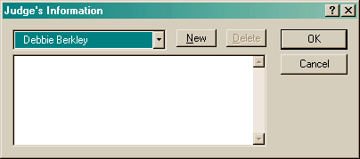

The Information dialog allows you to record information about any club, judge or location.

All clubs, judges or locations that you have currently entered in trials or runs will be listed. In addition, you can create an entry, using the New button, for any club, judge or location that you have not yet used. You can only delete entries that are not currently in use.